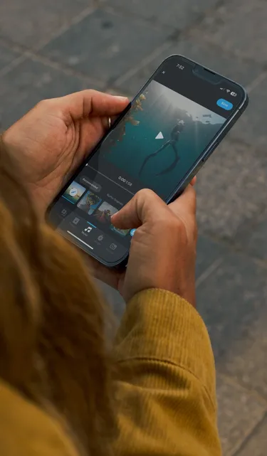
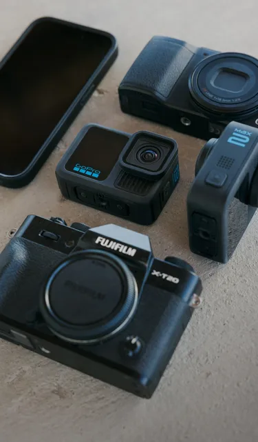

Quik 快问快答 — 从自动精彩视频到 360 全景特效，一次性说清
GoPro 官方出的 Quik 到底能做什么？自动上传、AI 剪辑、360 全景运动特效、订阅两档差异——整理成九组问答，帮你判断值不值得装。
整理一篇关于 Quik 的快问快答。如果你手里有一台 GoPro，或者在纠结要不要装这个 App，下面这几组问题应该能省你不少时间。
Quik 是什么？谁在用？
Quik 是 GoPro 官方出的跨平台视频剪辑 App，移动端（iOS / Android）为主，桌面端也有。去Quik官网能看到完整的功能列表，定位很明确：给 GoPro 相机用户做「从导入到成片」的一条龙。它不是那种全功能桌面剪辑软件的替代品，而是主打两个东西：AI 自动生成精彩视频，以及移动端独有的 360 全景编辑。
典型用户分两类：一类是拍了一堆 GoPro 素材但懒得剪的，Quik 帮你自动出片；另一类是 MAX 全景相机用户，Quik 是目前手机上唯一能做完整 360 全景运动特效的方案。

安装和上手难不难？
装 App 本身零门槛——应用商店直接搜，或者从官方下载入口拿安装包，都很方便。但要注意：Quik 的核心功能是和 GoPro 相机绑定的。如果你没有 GoPro，也能拿它剪手机拍的视频，但自动上传、360 编辑、云端存储这些主力特性都用不上，等于只剩一个基础剪辑器。
上手基本不用看教程。打开 App 导入素材（手机相册 / GoPro 相机直连 / 云端），Quik 会自动扫描并生成「精彩片段」合集，你选一个模板加音乐就能导出。想手动剪也可以，时间线操作和其他剪辑 App 大同小异。
自动精彩视频到底怎么回事？真的不用剪？
结论：对，真的可以不用剪——但前提是你能接受 AI 的剪辑品味。
完整的自动链路是这样的：相机在充电 → Wi-Fi 连上了 → 素材自动传 GoPro 云端 → Quik 在云端或手机端做 AI 分析 → 识别高光瞬间、人脸、运动 → 自动拼接成一段配好音乐的视频 → 手机推通知给你。
要触发自动上传，三个条件必须同时满足：GoPro Plus 订阅（Premium 或 Premium+ 都行）、Quik App 里开了自动上传开关、相机在充电且 Wi-Fi 已连接。另外素材必须是 GoPro 相机原始文件，第三方素材不触发。
自动生成的成片通常在 30 秒到 3 分钟之间，节奏和转场都模板化，但作为"先有一个能看的版本"来说已经够用了。不满意再手动微调也行。

360 全景那些特效，手机上真能做？
能，而且 Quik 是目前移动端最完整的 360 全景编辑方案。过去 360 全景的取景（Reframe）、运动特效这些事只能在桌面端用 Premiere Pro 加 GoPro 插件来做，门槛很高。Quik 在手机上把这件事做了，而且配了 AI 物体追踪、MotionFrame 陀螺仪取景、CameraFX 运动特效组，功能不比桌面插件差。
CameraFX 是 Quik 独有的一组 360 运动特效，五种：Spin（绕中心旋转）、Flip（翻跟头）、Roll（滚筒滚动）、Wobble（轻微晃动模拟手持）、Tiny Planet（星球模式）。每种特效的参数调节细节在Quik文档里写得很清楚。这里面 Flip 和 Roll 只有 Premium+ 订阅能开，Spin、Wobble、Tiny Planet 免费版就能用。
不过有个硬限制：所有 360 功能只支持 MAX 系列相机（GoPro MAX 2019 款和 MAX 2 2024 款）。HERO 系列不行，其他品牌的 360 相机（Insta360、Kandao、Ricoh 等）Quik 也不识别它们的全景元数据。如果你只有 HERO，360 这块可以直接跳过。
Premium 和 Premium+ 到底差在哪？怎么选？
一句话总结：有 MAX 相机、想完整用 360 全景 → Premium+；其他所有情况 → Premium 就够。
两档订阅每年差 $40（Premium $59.99 / Premium+ $99.99）。核心差异就两块：
第一块是 360 高级功能。Premium+ 独享 AI 物体追踪、Flip / Roll 两个 CameraFX 特效、360 HyperSmooth 防抖、Reframe 自动转场增强。如果你有 MAX 相机但只买了 Premium，等于白白浪费了 MAX 最酷的那几个功能。
第二块是第三方素材云存储。两档对 GoPro 素材都是无限原始画质，区别是手机 / DSLR / 其他品牌相机拍的第三方素材——Premium 给 100 GB，Premium+ 给 500 GB。100 GB 大概能放 2000 张 12MP 照片加 300 条 2 分钟 4K 视频，对大部分人够用。
相机换新抵扣也翻倍：Premium 每年 1 次换新、购机抵 $100；Premium+ 每年 2 次换新、抵 $200。如果你每年都换新 GoPro，Premium+ 划算；隔一两年才换一次的话 Premium 足够。
免费版够用吗？有什么限制？
免费版能用的东西：基础剪辑时间线、模板自动成片、MotionFrame 陀螺仪取景、关键帧摇镜、Spin / Wobble / Tiny Planet 三个 CameraFX 特效、360 变速和 Digital Lens。
不能用的：AI 物体追踪、Flip / Roll、360 HyperSmooth、自动精彩视频云端生成（免费版只在手机本地跑 AI）、4K 导出、去水印、云存储配额（免费版只有 5 GB 总存储）。
所以判断标准很简单：先装免费版试试自动成片和基础剪辑好不好用，觉得顺手了再转 Premium。Premium+ 只有 MAX 相机用户才需要考虑。
和其他剪辑 App 比，Quik 特别在哪？
三个点：AI 自动生成成片的成熟度、360 全景的移动端独一份、和 GoPro 相机生态的无缝衔接。
AI 自动成片这块，市面上不少 App 都有类似功能，但 Quik 因为直接对接 GoPro 相机的拍摄元数据（GPS、速度、时间戳），识别高光瞬间的准确度比竞品高。比如它能自动筛掉你骑行中那段没速度的素材，只留冲刺和下坡的片段。
360 全景编辑的移动端独一份前面说过了，这里不重复。
生态衔接这块：GoPro 相机直连 Quik 导入素材、相机充电自动传云端、手机收通知看成片——这条链路是闭的，用其他 App 得自己手动导。如果你已经是 GoPro 深度用户，Quik 几乎是绕不开的。
关于 Quik 的整理资料，GitHub、Gitee、GitCode 三个仓库都有同步版本，国内访问哪个顺手用哪个。
最后一句：有 GoPro 就装，没有就不装；有 MAX 相机直接 Premium+，没有的话先免费版试用再决定要不要 Premium。